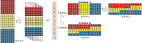
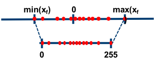

Note
Implementation Trick1
GEMM
General Matrix Multiplication describes the implementation tricks that speeds up computation in neural network. Matrix multiplication is a classical, fundamental and established field in both math and computer science. And this is the reason why much effort and interest have been put into how to further speed up it and how to convert other kinds of operations into it.
Im2Col
Single Feature Map and Kernel
A normal convolution operation will slide a window of the same size as kernel (\(F: k_h \times k_w\)) through the feature map (\(I: i_h \times i_w\)) in a row-major order (for simplicity, we will take that stride is \(1\) and padding is \(0\)). This causes problem because numbers in a single convolution operation will span multiple columns, due to which the spatial locality cannot be exploited.
Since the convolution operation is in essence doing the “sum of products”, we may just as well treat the convolution as dot product between two vectors.
To realize it, we can squeeze the kernel into a \(k_h k_w \times 1\) column vector and each
window on the feature map to a \(1 \times k_h
k_w\) row vector (in memory, a column vector v[N][1]
is no difference from a row vector v[1][N]). Then we stack
these row vectors vertically in the order as their original window would
appear in the convolution. This newly synthesized matrix \(L\) is usually called lowered
matrix.
As for implementation, we don’t do this “window by window”, because usually the feature map has a large width, which still introduce the same issue of not exploiting the spatial locality when accessing across rows. For each position in the feature map, we can identify all the positions that it will appear in the lowered matrix in one off. Since kernel size is usually small, accessing this lowered matrix across rows causes less cache misses than that in the input.
Treating \(L\) as \(l_h \times l_w \times k_h \times k_w\), we fill up its entries in following way:
const int i_h = 9, i_w = 9;
const int k_w = 3, k_h = 3;
// For simplicity, set s_w = s_h = 1, padding = 0.
const int l_h = i_h - k_h + 1, l_w = i_w - k_w + 1;
void im2lower(double I[i_h][i_w], double L[l_h][l_w][k_h][k_w]) {
for (int h = 0; h < i_h; h++) {
for (int w = 0; w < i_w; w++) {
for (int i = -k_h + 1; i < 1; i++) {
for (int j = -k_w + 1; j < 1; j++) {
if (h + i < 0 || h + i >= l_h) continue;
if (w + j < 0 || w + j >= l_w) continue;
L[h + i][w + j][-i][-j] = I[h][w];
}
}
}
}
}
Normal Input and Filter
By far we only consider the case of a single convolution. More often
that not, the real-world convolution is done in batch with multiple
channels, meaning that the input \(I\)
is of shape \(i_n \times i_c \times i_w \times
i_w\) and filter \(F\) is of
shape \(f_c \times i_c \times k_h \times
k_w\). Each of \(f_c\) output
channels is obtained as the sum of the one-on-one convolution between
each of the \(i_c\) kernels and each of
the \(i_c\) channels (which is in
accordance with PyTorch’s Conv2d).
Now we consider the case where there are multiple channels. We simplify a bit by still setting \(i_n = 1\). As a result, the input \(I\) is of shape \(i_c \times i_h \times i_w\) and filter \(F\) still remains \(f_c \times i_c \times k_h \times k_w\). Suppose each feature map contains \(d = o_h \times o_w\) unique kernel windows. Then each transformed channel should be of shape \(d \times k_h k_w\) (the order of symbols in shortened multiplication matters too; in this case, \(k_h k_w\) indicates we squeeze by row); each transformed kernel should be of shape \(k_h k_w \times 1\).
The input contains \(i_c\) such transformed \(d \times k_h k_w\) channels. Instead of doing matrix multiplication \(i_c\) times, we can concatenate these \(i_c\) matrices horizontally to give a single \(d \times (i_c k_h k_w)\) lowered matrix \(L\).
The filter contains \(f_c \times i_c\) such transformed \(k_h k_w \times 1\) kernels. For each output channel, we can concatenate corresponding \(i_c\) kernels vertically to facilitate the one-on-one convolution, which gives a single \((i_c k_h k_w) \times f_c\) transformed filter \(F'\).
Now \(I \circledast F\) becomes \(L \times F'\). The output shape is \(d \times f_c\). Each input image becomes a \(d \times 1\) column vector finally, which is exactly what “Im2Col” means. This \(d \times 1\) vector can be transposed and then reshaped into \(o_h \times o_w\) to recover the convolution result (no actual transformation has to be done, just to interpret it this way). Then by applying the Im2Col trick repeatedly, we can chain up and handle consecutive convolutional layers.
const int i_h = 7, i_w = 7, i_c = 3;
const int k_h = 3, k_w = 3, f_c = 9;
// For simplicity, set s_w = s_h = 1, padding = 0.
const int l_h = i_h - k_h + 1, l_w = i_w - k_w + 1;
void im2lower(double I[i_c][i_h][i_w], double L[l_h][l_w][i_c][k_h][k_w]) {
for (int c = 0; c < i_c; c++) {
for (int h = 0; h < i_h; h++) {
for (int w = 0; w < i_w; w++) {
for (int i = -k_h + 1; i < 1; i++) {
for (int j = -k_w + 1; j < 1; j++) {
if (h + i < 0 || h + i >= l_h) continue;
if (w + j < 0 || w + j >= l_w) continue;
L[h + i][w + j][c][-i][-j] = I[c][h][w];
}
}
}
}
}
}
void ker2col(double F[f_c][i_c][k_h][k_w], double K[i_c][k_h][k_w][f_c]) {
for (int i = 0; i < i_c; i++) {
for (int h = 0; h < k_h; h++) {
for (int w = 0; w < k_w; w++) {
for (int f = 0; f < f_c; f++) {
K[i][h][w][f] = F[f][i][h][w];
}
}
}
}
}MEC2
Im2Col costs much extra space because most entries in the feature map appears \(k^2\) times in the transformed lowered matrix. The memory-efficient computation method improves on this by putting the entries of (say vertically) adjacent windows in one row so that entries can be reused. By doing so, the transformed kernel row vector will slide through each row of obtained matrix to compute convolution result.
Again in single feature map and kernel case, the filter \(F: k_h \times k_w\) is squeezed to a \(k_h k_w \times 1\) column vector. The input \(I: i_h \times i_w\) is converted to the lowered matrix \(L: l_h \times l_w\) where \[ l_h = o_w \triangleq (i_w - k_w) / s_w + 1 \\ l_w = i_h k_w, \text{assuming that $k_w \ge s_w$}\\ \] Note that a \(k_w\)-width bar in \(I\) (like \(A\)) expands to a row in \(L\), and finally a row in \(O\). Treating \(L\) as \(o_w \times i_h \times k_w\), we fill up its entries in following way:
const int i_h = 10, i_w = 10;
const int k_w = 3, s_w = 1;
const int o_w = (i_w - k_w) / s_w + 1;
// const int l_h = o_w, l_w = i_h * k_w;
void mec(double I[i_h][i_w], double L[o_w][i_h][k_w]) {
for (int w = 0; w < o_w; w++) {
for (int h = 0; h < i_h; h++) {
for (int i = 0; i < k_w; i++) {
// I can be transposed first for better spatial locality.
L[w][h][i] = I[h][s_w * w + i];
}
}
}
}Memory Layout
Memory layout is not a standalone method to speed up matrix computation, but that it cornerstones most implementation tricks. Different methods may assume different memory layouts.
In convention, the input is of shape \(\mathrm{N \times C \times H \times W}\), which is the assumed layout of Im2Col. However, the preferred layout for convolution is usually \(\mathrm{N \times H \times W \times C}\).
The justification is that, we usually would parallelize by accessing a window of pixels across all the channels. Though the window spans multiple columns in both cases, \(\mathrm{N \times C \times H \times W}\) would separate these \(C\) windows apart but \(\mathrm{N \times H \times W \times C}\) would otherwise bring all the \(c\) channel values of a pixel in a row, in which case the spatial locality can be exploited.
\(\mathrm{N \times H \times W \times C}\) is the assumed layout by MEC. That is, \(I\) is of shape \(i_n \times i_h \times i_w \times i_c\) and \(F\) is of shape \(k_h \times k_w \times i_c \times f_c\). Given \(i_n \times i_c\) number of \(o_w \times i_h k_w\) matrices, \(L\) is obtained by interleaving horizontally across channels, and stacked vertically across images. As a result, \(L\) is of shape \(i_n o_w \times i_h k_w i_c\). Accordingly, \(F\) is squeezed to \(F': k_h k_w i_c \times f_c\).
The example below shows a \(3 \times 7 \times 7 \times 1\) input and \(3 \times 3 \times 1 \times 1\) filter.

Given the transformed \(L\) and \(F'\), there are two methods for the remaining dot product (convolution). One is to do \(L[0 : i_n o_w, s_w i_h k_w h : s_w i_h k_w h + k_h k_w c] \times F'\) for \(h = 0, \dots, o_h\), resulting in a \(\mathrm{H \times N \times W \times C}\) layout (note that each bar in \(L\) expands to a row in \(O\)), illustrated at the upper right in the above figure. If we want to chain up convolutional layers, we need to convert this layout to \(\mathrm{N \times H \times W \times C}\).
Another is to do \(L[o_w n : o_w (n+1), s_w i_h k_w h : s_w i_h k_w h + k_h k_w c]\) for \(h = 0, \dots, o_h, n = 0,\dots,i_n\), resulting in a \(\mathrm{N \times H \times W \times C}\) layout, illustrated at the lower right in the above figure (the tensor is not properly drawn though; it should have been of shape \(3 \times 5 \times 5\)).
Direct Conv/MM3456
GEMM usually requires extra time and space to do transformation. In-place convolution/matrix multiplication also have room for improvement.
Loop Reordering
Nested loop is very common in computation. If the effective statements only appear in the innermost loop, the nesting level of loop indices can be usually be changed without causing side effect.
One reason to shuffle the loop indices is to better exploit the spatial locality. Another is to exploit the temporal locality, or called input reuse. As an example,
// before reordering
void matmul() {
memset(C, 0, sizeof(C));
for (int i = 0; i < n; i++) {
for (int j = 0; j < n; j++) {
for (int k = 0; k < n; k++) {
C[i][j] += A[i][k] * B[k][j];
}
}
}
}
// after reordering
void matmul_ikj() {
memset(C, 0, sizeof(C));
for (int i = 0; i < n; i++) {
for (int k = 0; k < n; k++) {
for (int j = 0; j < n; j++) {
C[i][j] += A[i][k] * B[k][j];
}
}
}
}Before reordering, when innermost loop traverses over k,
there will be one output reuse (C[i][j]), one cache hit
(A[i][k]) and one cache miss (B[k][j]. After
reordering, when innermost loop traverses over j, there
will be one input reuse (A[i][k]) and one cache hit
(B[k][j]).
Loop Unrolling
At the end of a loop, there is usually a branch checking to determine
whether to exit the loop or not. Loop unrolling tries to reduce the
number of branch checking in loop (see Duff’s device).
If the number of loops is known in advance, as is usually the case in a
for loop, the number of branch checking can be reduced by
repeating the loop statements several times:
/* count > 0 and count % 8 == 0 assumed */
// before unrolling
send(to, from, count)
register short *to, *from;
register count;
{
do {
*to = *from++;
} while (--count > 0);
}
// after unrolling
send(to, from, count)
register short *to, *from;
register count;
{
register n = count / 8;
do {
*to = *from++;
*to = *from++;
*to = *from++;
*to = *from++;
*to = *from++;
*to = *from++;
*to = *from++;
*to = *from++;
} while (--n > 0);
}Manual loop unrolling makes little sense nowadays since modern CPU can smartly predict the correct branch and modern compiler can automatically optimize the loop code.
Write Caching
Tiling78
Tiling utilizes the matrix multiplication property that \[ \begin{gather*} A = \begin{pmatrix} A_{11} & A_{12} \\ A_{21} & A_{22} \end{pmatrix}, B = \begin{pmatrix} B_{11} & B_{12} \\ B_{21} & B_{22} \end{pmatrix} \\ \\ A B = \begin{pmatrix} A_{11} B_{11} + A_{12} B_{21} & A_{11} B_{12} + A_{12} B_{22} \\ A_{21} B_{11} + A_{22} B_{21} & A_{21} B_{12} + A_{22} B_{22} \\ \end{pmatrix} \end{gather*} \]
Tiling divides the matrix into blocks that can better fit in the cache line, so that the temporal locality can be exploited.
Vectorization (SIMD)9
Array Packing
Dataflow Optimization
Systolic Array10
Systolic array is dataflow trick implemented in hardware level to speed up compute-bound task. It is an analog to the heart beat: in systolic array setting, memory is the heart, which bumps data (blood) to (usually a regular array of) processing elements (cells) and then recycle (processing result).
A whole bandwidth of data would certainly entail a bunch of PEs to digest. These PEs can have local memory and execution kernel, which means they can be any kind of computing devices. PEs also connect to each for passing data. All that’s left to do is to properly orchestrate the data flow.
The crux is that, instead of bumping one piece of data to a single processing element (PE), bringing the memory bandwidth to the utmost utilization would be more efficient. Other than that, once data is brought out from memory, it and its intermediate result can be used effectively at each PE it passes through.
Elimination of Multiplication1112
Multiplication is way more time-consuming than addition. Therefore generally, we are willing to trade off with more additions for less multiplications. The two algorithms below can reduce the number of multiplications in matrix computation.
Strassen’s Algorithm1314
Firstly we look at the Strassen’s algorithm of matrix computation. Suppose we do the matrix multiplication on two square matrices \(M\) and \(N\) following the idea of blockwise multiplication. We split the two matrices into \[ M = \begin{bmatrix} A & B \\ C & D \end{bmatrix}, N = \begin{bmatrix} E & F \\ G & H \end{bmatrix} \] Then we calculate the intermediate matrices \[ \begin{align*} S_1 &= (B-D)(G+H) \\ S_2 &= (A+D)(E+H) \\ S_3 &= (A-C)(E+F) \\ S_4 &= (A+B)H \\ S_5 &= A(F-H) \\ S_6 &= D(G-E) \\ S_7 &= (C+D)E \\ \end{align*} \] And the final result will be \[ \begin{bmatrix} A & B \\ C & D \end{bmatrix} \begin{bmatrix} E & F \\ G & H \end{bmatrix} = \begin{bmatrix} S_1 + S_2 - S_4 + S_6 & S_4 + S_5 \\ S_6 + S_7 & S_2 - S_3 + S_5 - S_7 \end{bmatrix} \] The derivation of matrix multiplication with Strassen’s algorithm can be formulated as \[ T(n) = \begin{cases} \Theta(1), & \text{if $n=1$;} \\ 7 \Theta(\frac{n}{2}) + \Theta(n^2), & \text{if $n>1$.} \end{cases} \] The master theorem provides an asymptotic analysis for divide-and-conquer recurrence like this. Let \(T(n)\) be a monotonically increasing function that satisfies \[ T(n) = a T(\frac{n}{b}) + f(n) \\ T(1) = c \] where \(a \ge 1, b \ge 2, c > 0\). If \(f(n) \in \Theta(n^d)\) where \(d \ge 0\), then \[ T(n) = \begin{cases} \Theta(n^d) & \text{if $a < b^d$} \\ \Theta(n^d \log n) & \text{if $a = b^d$} \\ \Theta(n^{\log_b a}) & \text{if $a > b^d$} \\ \end{cases} \]
The time complexity of Strassen’s algorithm is \(\Theta(n^{\log_2 7}) \approx \Theta(n^{2.8074})\). There are 7 multiplications and 18 additions (recall that subtraction is addition in computer arithmetics) in Strassen’s algorithm. In usual blockwise matrix multiplication, these numbers are 8 and 4. These extra 14 additions in Strassen’s algorithm may drag down its performance when input size is small. Other than that, the memory access pattern of Strassen’s algorithm is quite chaotic. There are many temp matrices of different shapes generated during the execution. Besides, floating-point errors will accumulate in Strassen’s large number of additions. These factors may constitute the reason why Stassen algorithm is not widely adopted.
Winograd Algorithm15
In 1-D convolution, let \(m\) be the length of the output vector and \(r\) be the length of kernel. The baseline implementation would require \(mr\) multiplications. But it is argued that the minimum number of required multiplications is \(m + r - 1\) (denoted as \(F(m,r)\) the corresponding algorithm).
Similarly in 2-D convolution, let \(m \times n\) be the output dimension and \(r \times s\) be the kernel dimension. The baseline implementation would require \(m n r s\) multiplications. But the minimum number of required multiplications is \((m + r - 1)(n + s - 1)\) (denoted as \(F(m \times n, r \times s)\) the corresponding algorithm).
The Winograd paper documents the following algorithm for \(F(2,3)\): \[ F(2,3) = \begin{bmatrix} d_0 & d_1 & d_2 \\ d_1 & d_2 & d_3 \end{bmatrix} \begin{bmatrix} g_0 \\ g_1 \\ g_2 \end{bmatrix} = \begin{bmatrix} m_1 + m_2 + m_3 \\ m_2 - m_3 - m_4 \end{bmatrix} \] where \[ m_1 = (d_0 - d_2) g_0, m_2 = (d_1 + d_2) \frac{g_0 + g_1 + g_2}{2} \\ m_4 = (d_1 - d_3) g_2, m_3 = (d_2 - d_1) \frac{g_0 - g_1 + g_2}{2} \] Actually, this can be written in matrix form as \[ Y =A^T [(G g) \odot (B^T d)] \] where \[ B^T = \begin{bmatrix} 1 & 0 & -1 & 0 \\ 0 & 1 & 1 & 0 \\ 0 & -1 & 1 & 0 \\ 0 & 1 & 0 & -1 \end{bmatrix}, G = \begin{bmatrix} 1 & 0 & 0 \\ \frac{1}{2} & \frac{1}{2} & \frac{1}{2} \\ \frac{1}{2} & -\frac{1}{2} & \frac{1}{2} \\ 0 & 0 & 1 \end{bmatrix} \\ A^T = \begin{bmatrix} 1 & 1 & 1 & 0 \\ 0 & 1 & -1 & -1 \end{bmatrix}\\ g = \begin{bmatrix} g_0 & g_1 & g_2 \end{bmatrix}^T \\ d = \begin{bmatrix} d_0 & d_1 & d_2 & d_3 \end{bmatrix}^T \] \(F(m \times m, r \times r)\) can be built upon \(F(m, r)\). For example, \(F(2 \times 2, 3 \times 3)\) is \[ Y' = A^T \left[ [G g G^T] \odot [B^T d B] \right] A \] \(F(m \times n, r \times s)\) can be built upon \(F(m, r)\) and \(F(n, s)\).
Winograd algorithm is great. One problem is that the \(A,B,G\) matrix are too specific. For input/kernel of different sizes, \(A,B,G\) will be greatly different. For a convolutional neural network that involves inputs/kernels of varying sizes, Winograd algorithm is not suitable for acceleration on special-purpose hardware, which is usually dedicated to a fixed type of computation.
Sparse Computation[^sparse]
Structured sparsity can reduce computation when there is zero in the multiplicands. But this involves zero-check for each element of the filter, which might ruin the CPU pipeline however. To avoid zero-check in a sparse matrix, we may as well store the positions of all the nonzero elements. During computation, only involved nonzero elements will be multiplied and accumulated to obtain the final result.
Sparse Matrix Multiplication
For a sparse matrix, we either store it in compressed sparse row (CSR) or compressed sparse column (CSC) (or other formats16). That is, for every row/column, we maintain a linked list whose nodes store the nonzero value and its offset in this row/column.
The compression is done after training. The choice of CSR or CSC in matrix multiplication seems arbitrary, so long as one matrix is CSR and the other is CSC. But in practice, convolution is done row-by-row. We need to access the feature map across rows more often than across columns. Thus, feature map is stored in CSR and the filter is stored in CSC.
Sparse-sparse Convolution
Sometimes not only the filter, but also the feature map is sparse, e.g. in point cloud case. We may as well apply the Im2Col and then apply the sparse matrix multiplication. But better still, we hope to directly apply the sparse convolution1718 on the original feature map.
But does sparse-sparse convolution always work? It depends. The crux is that we don’t just carry out a single sparse-sparse convolution. Modern models consist of multiple layers. We hope the output of each layer is sparse so that sparse-sparse convolution can be chained up. If the output of any intermediate layer is not sparse enough, the whole process becomes pointless.
Tensor Virtual Machine
Current neural network frameworks translate models into a computation graph in ONNX format, which in turn is translated into hardware instructions by the compilers from different manufacturers (e.g. TensorRT for NVIDIA GPU, MNN for ARM Cortex-A CPU, OpenVINO for Intel CPU).
CUDA
Ideally, the computation can be parallelized for greater speedup. CUDA provides such API for parallel computation on GPU. One key concept of CUDA is its granularity of execution: grid -> block -> thread (from coarsest to finest).
Model Trick
Other than implementation tricks, the matrix computation can be sped up by multiplication with zero. Block of zeros usually allows us to jump a series of block computation when using the implementation tricks mentioned before. Other than that, it saves space due to the sparse matrix storage model (a kind of model compression).
It would be great if there are multiple blocks of zeros in the matrix. Better still, these zeros won’t undermine the model results much.
Sparsification
Sparsification tries to zero parameters in block during training. It does so by adding special regularization term to the loss function. Typical sparsity analysis assumes the linear-regression-like problem. Denote the original loss as \(\ell_w(X, Y)\) where \(\ell\) is the MSE loss function, \(X\) is the data, \(Y\) is the target (\(Y\) may be a feature map or label vector) and \(w\) is the model parameters (interpreted as a vector). Then, the problem is formulated as \[ \min_{w} \ell_w(X, Y) \triangleq ||Y - X w||_F \] We may force an extra \(l_p\) norm term on \(w\): \[ \hat \ell_w(X, Y) \triangleq \ell_w(X, Y) + \lambda ||w||_p \] Note that \[ ||w||_0 = \sum_{i} \mathbb{1}[w_i \ne 0] \\ ||w||_1 = \sum_{i} |w_i| \\ ||w||_2 = \sqrt{\sum_{i} x_i^2} \\ ||w||_\infty = \max_{i} |x_i| \] \(l_0\) norm is a direct attempt to penalize nonzero parameters. However, \(\lambda ||w||_0\) is not continuous at points when there is a zero entry in \(w\); when \(\forall i, w_i \ne 0\), \(\lambda ||w||_0\) does not contribute gradient at all. There is no analytical way to determine \(w_i\) should be zero or not. The only course open is to manually set each \(w_i\) to zero. But this method is prohibitive in terms of the complexity: there are \(2^{|w|}\) combinations to try (there are orthogonal matching pursuit <??> and other methods that try to approximate it though). Thus, the \(l_0\) norm is ruled out for consideration.
Then \(l_1\) norm pops up. \(l_1\) norm is good since there is an analytical solution to its gradient w.r.t. \(w\). (why does \(l_1\) norm add sparsity?)
Structured Sparsity
Better zero parameters is that zero parameters appear block-wise. Block-wise zero entries are the essence of sparsity. However, the Lasso term does not guarantee zero entries appear in block. To amend it, group Lasso trick is invented and the regularized loss becomes \[ \hat \ell_w(X, Y) = \ell_w(X, Y) + \sum_j \lambda_j ||\beta_j||_1 \] where \(\beta_j\) is the \(l_2\) norm of \(j\)-th group of parameters that usually spatially near.
Structured sparsity precedes random sparsity, because random sparsity does not secure a regular memory access pattern, so that there will be a poor cache locality. The figure above illustrates from irregular structured sparsity to regular structured sparsity19. Obviously, regular structured sparsity is preferred so long as it won’t undermine the model performance much.
Nonlinearity Approximation20
As mentioned, typical sparsification analyzes the linear regression problem, which has two components: 1) the model as a linear function; 2) the MSE loss function. The MSE loss function does well, not among the best though, in most tasks. But mere linear model won’t do generally.
Most nonlinearity in nonlinear model comes from the element-wise function mapping on the tensor obtained by linear transformation of input, e.g. the response on feature map obtained by convolution (in this case, \(X,w,X w\) will be the transformed input, kernel and convolution result respectively, as shown in GEMM section). Our focus is still on sparsity of the linear component in the nonlineear model.
The objective becomes \[ \min_w ||Y - f(X w)||_F \] where \(f\) is a nonlineear function like \(\mathrm{ReLU}\).
Pruning
Pruning is a kind of post-processing trick, which happens after training, to make parameters more “zero”.
Channel Pruning
Channel pruning boils down to the following optimization problem: \[ \begin{aligned} \min_{\beta, W} \quad & \left\Vert Y - \sum_{i} \beta_i X_i W_i \right\Vert_F^2 \\ \text{s.t.} \quad & ||\beta||_0 \le c' \end{aligned} \]
Note here that \(X_i\) is not the feature map at \(i\)-th channel, but instead the sampled window of kernel size (\(k_h \times k_h\)) on \(i\)-th feature map. It is known that this problem is NP-hard because of the \(l_0\) norm term in the constraint. In practice, it can be relaxed to (why and really?) \[ \begin{aligned} \min_{\beta, W} \quad & \left\Vert Y - \sum_{i} \beta_i X_i W_i \right\Vert_F^2 \\ \text{s.t.} \quad & ||\beta||_1 \le c'' \and \forall i, ||W_i||_F = 1 \end{aligned} \] Note that kernels \(W\) is also included for optimization. This is because after pruning, kernels may still be fine-tuned a bit to preserve the accuracy.
The above formula can be optimized in an alternative fashion: i.e. \(W\) is fixed and \(\beta\) is to be optimized; then \(\beta\) is fixed and \(W\) is to be optimized. We also add a regularization term for each \(W_i\). This is because optimizing \(W\) is materially a linear regression task, which easily has infinitely many solution due to the dimension of \(X_i\) unless there is an extra constraint.
Low-rank Decomposition
Take the matrix multiplication as an example to appreciate the idea of low-rank decomposition: \[ X \times W \Rightarrow X \times U \times V \] We may decompose \(W: m \times n\) into \(U: m \times r\) and \(N: r \times n\) where hopefully \(r < n,m\) (note that when \(r = \rank W\), there exists \(U\) and \(V\) that can fully recover \(W\)). In this way, storage cost can be saved and computation can be sped up.
Note that our objective is not to reconstruct the matrix \(W\) (called matrix approximation) with some other lower-rank matrices. Or else simply the singular value decomposition would do the job. Instead, we are to reconstruct the model output (called matrix regression). Therefore, the problem is formulated as \[ \begin{aligned} \min_{W, A, B} \quad & ||Y - X W||_F \\ \text{s.t.} \quad & W = U V \\ & \rank U, \rank V \le r \end{aligned} \]
Combination with Other Methods
Low-rank decomposition can be combined with sparsity and nonlinearity approximation to give the following ultimate pruning problem: \[ \begin{aligned} \min_{W, A, B} \quad & ||Y - f(X W)||_F \\ \text{s.t.} \quad & W = A + B \\ & ||A||_0 \le S \\ & \rank B \le L \\ \end{aligned} \]
where \(|| \cdot ||_0\) is the number of nonzero entries in the matrix.
The sparsity comes from \(A\) and low-rank decomposition comes from \(B\). The above problem is NP-hard due to the constraints on \(A\) and \(B\). We can relax these constraints to other forms: \[ \begin{aligned} \min_{W, A, B} \quad & ||Y - f(X W)||_F \\ \text{s.t.} \quad & W = A + B \\ & ||A||_{21} \le S \\ & ||B||_* \le L \\ \end{aligned} \] where \(|| \cdot ||_{21}\) takes the \(l_1\) norm of the \(l_2\) norms taken on each column of the matrix; and \(|| \cdot ||_*\) is the nuclear norm that equals to the sum of singular values.
To solve it, alternating direction method of multipliers (ADMM) can be adopted. The augmented Lagrangian function is (??) \[ L(W,A,B,\Lambda) = ||Y - f(X W)||_F + \lambda_1 ||A||_{21} + \lambda_2 ||B||_* + \Lambda \odot (W - A - B) + \frac{\rho}{2}||W - A - B||_F^2 \]
Tensor Decomposition
Tucker decomp, CP decomp, Tucker-2 (or TT) decomp
Quantization21
Model parameters are natively floating-point numbers. During
training, model parameters usually won’t be too large and won’t exceed
the range of int8. One way to make the model smaller and
run faster is to map model parameters to integers of smaller size (say
from fp32 to int16).
Other than the efficiency perspective, if the original values span a very narrow range (say from -10 to 10), by mapping them to a wider range of integers, better precision may even be obtained. This is mainly due to that most floating-point number arithmetic suffer from precision loss. Particularly, when two floating-point numbers of significant difference adds or subtracts, a great loss in precision can occur (called catastrophic cancellation).
After integer arithmetic, we can map these integer values back again. The process involved is called quantization/dequantization. For a number \(r\), its quantization is \(Q(r) = \text{Int}(r/k) - b\) where \(k\) is the scale and \(b\) is the bias. To dequantize, \(\hat r = k(Q(r) + b)\).


The first question to consider symmetric quantization or asymmetric quantization (the figure above). That is, should the zero in the original domain mapped to zero or \(-b\) (because \(\text{Int}(0/k)-b = -b\)). In essence, this is a question of choice of bias. Preferring to computation efficiency, we hope bias is zero. To show it, consider the dequantization process of the matrix product: \[ A = k_A \times A_Q + b_A \\ B = k_B \times B_Q + b_B \\ A B = k_A k_B A_Q B_Q + k_A b_B A_Q ＋ k_B b_A B_Q + b_A b_B \] It would have been cleaner if \(b_A, b_B\) are zero. However, if the activations in the network are mostly non-negative, like in the case where ReLU is used, symmetric quantization would waste half of the quantization range.
The second question is to consider using the restricted range
or the full range of the target integer type. Take
int8 for an example, should we map numbers to \([-127, 127]\) or \([-128, 127]\)? When symmetric quantization
is used, the answer is the restricted range. The reason is that, the
quantization of two numbers of the same magnitude but different signs,
should be of the same magnitude but different signs too. But had the
full range been used, supposing the floating-point range was \([-2.2, 2.2]\), \(2.2\) and \(-2.2\) would have been quantized into \(2.2 \times \frac{127}{2.2} = 127\) and
\(-2.2 \times \frac{128}{2.2} = -128\)
respectively. The problem is that the scaling factors for positive
number and negative number are different due to the asymmetric range, in
which case a small bias would be introduced and leads to precision
loss.
The third question is the timing of quantization. Should the quantization happen during training (quantization-aware training) or after training (post-training quantization)? Accompanying this question is what the best scale should be.
Post-training (static) quantization (PTQ)
In PTQ, model are trained before quantized. After training, a small subset of training data (called calibration data) is used to determine the scale (magnitude) and the clipping range (quantization bit number). Notice that model parameters are fixed in this process.
Quantization-aware training (QAT)

In QAT, model parameters are quantized and then trained. QAT brings a great save in computation during training. But this yields another question: should the quantization happen during forward pass or during back propagation?
Quantization is used in forward pass but not in back propagation. The reason not to update gradient in quantized domain is that, numbers in quantized domain are integers but gradient is fractional. Another reason not to back-propagate in quantized domain is that, the gradient might be so large as to disturb the convergence of model, compared with that in dequantized domain.
The error is measured between the dequantized output and the target output. Model parameters will update in dequantized format and will be re-quantized for next round of training. There are arguments on both sides for this approach. One good aspect is that it takes the quantization error into consideration. But this causes the gradient mismatch because the gradient of the parameters are computed with quantized values but updated in dequantized format. In worst case, this may cause the model to diverge.
This training method reconciles with the idea of stochastic neuron, where back propagation is done by straight-through estimator (STE)22. There is another method based on STE and called parameterized clipping activation (PACT)23. The meat of PACT is a learnable ReLU function: \[ y = \mathrm{PACT}(x, \alpha) = 0.5 (|x| - |x-\alpha| + \alpha) = \begin{cases} 0, & x \le 0 \\ x, & 0 < x < \alpha \\ \alpha, & x \ge \alpha \end{cases} \] Back-propagation is done w.r.t. the dequantized value \(y_{dq} \triangleq \lfloor y \cdot \frac{2^k - 1}{\alpha} \rfloor \frac{\alpha}{2^k - 1}\). \(\frac{\partial y_{dq}}{\partial y}\) is set to \(\frac{\text{range before quant.}}{\text{range of quant. domain}}\) as would be in STE. \(\alpha\) is learnable so that clipping range can be dynamically adjusted: \[ \frac{\partial y}{\partial \alpha} = \begin{cases} 0, & x < \alpha \\ 1, & x \ge \alpha \end{cases} \]
The fourth question is the granularity of quantization. There are usually three kinds of choices, namely channel-wise, layer-wise and group-wise quantization.
BNN/TNN24
Binarized and ternary neural network bring quantization to an extreme. The reason to particularly split them out under quantization is that, their multiplication and addition logic are quite different. They use 1 bit and 2 bits for clipping: BNN maps values to -1 and 1; TNN maps values to -1, 0 and 1. Then the multiplication and addition only involve Boolean operations, which will be much faster. Other than that, the training process of BNN/TNN resembles that of quantization.
The motivation behind is that model parameters are usually within \([-1, 1]\). So why not try just using -1, 0 and 1? Given a weight matrix \(W\) (squeezed into an \(\R^n\) vector), there is an analytical solution to the best scaling factor \(k\) and the quantized value \(B\) (squeezed into an \(\R^n\) vector) for BNN:
\[ \begin{aligned} B^* &= \arg \min_{B} \| W - kB \|_2 = \arg \min_{B} \| W - kB \|_2^2 \\ &= \arg \min_{B} W^T W - 2 k W^T B + k^2 B^T B \\ \end{aligned} \] Since \(W\) is known and \(B \in \{ -1, 1 \}^n\), \(W^T W\) is a constant \(c\) and \(B^T B\) is \(n\). Thus, \[ \begin{gathered} B^* = \arg \min_{B} k^2 n + c - 2 k W^T B = \mathrm{sign}(W) \\ k = \frac{W^T B^*}{n} \end{gathered} \]
Knowledge Distillation
Knowledge distillation is a model compression method in which a smaller model is trained to mimic the pre-trained larger model. The larger and the smaller model are referred to as “teacher” and “student” respectively.
There are three kinds of distillation methods:
Response-based knowledge
This is perhaps the easiest one to think of: given the same input, the output (usually a categorical distribution) should be the same.
In this case, the distillation loss is set to be the cross entropy between the distributions output by the teacher and the student. Minimizing the cross entropy between the output distributions equivalently minimizes the their KL-divergence, given that teacher’s distribution is fixed.
On the other hand, the student model can further be rectified by the ground-truth loss.
Feature-based knowledge
Relation-based knowledge
Network Architecture Search
There are mainly two indexes for a network: one is the latency and the other is accuracy. In NAS, latency is cheaper to check upon than accuracy, since the training is more time-consuming than a single pass of input.
NAS is mostly based on heuristics. During training, we can save time by
- early stop
- warm restart (parameter reuse)
- use the arrogate target like FLOPs (which is usually proportional to latency)
As for searching in the solution space, we can do with
- grid search
- random sampling
- reinforcement learning
- evolutional algorithm
- Bayesian optimization like Gaussian process
Useful Links
Related courses:
- CS240A - Applied Parallel Computing (ucsb.edu)
- MIT 6.5940 Fall 2023 TinyML and Efficient Deep Learning Computing
https://arxiv.org/abs/1911.05662↩︎
https://arxiv.org/abs/1706.06873↩︎
https://ieeexplore.ieee.org/document/10144741↩︎
https://tvm.apache.org/docs/how_to/optimize_operators/opt_gemm.html↩︎
https://ieeexplore.ieee.org/document/6877334↩︎
https://spatial-lang.org/dotprod↩︎
http://csapp.cs.cmu.edu/3e/waside/waside-blocking.pdf↩︎
https://penny-xu.github.io/blog/tiled-matrix-multiplication↩︎
https://docs.juliahub.com/LoopVectorization/4TogI/0.9.8/examples/matrix_multiplication/↩︎
https://www.youtube.com/watch?v=8zbh4gWGa7I&t=424s↩︎
https://arxiv.org/abs/2002.12418↩︎
https://www.youtube.com/watch?v=DruwS2_cVys↩︎
https://martin-thoma.com/strassen-algorithm-in-python-java-cpp/↩︎
https://www.diva-portal.org/smash/get/diva2:1219121/FULLTEXT01.pdf↩︎
https://arxiv.org/abs/1509.09308↩︎
https://ceca.pku.edu.cn/docs/20191126112405101722.pdf↩︎
How does sparse convolution work? | by Zhiliang Zhou | Towards Data Science↩︎
Sparse Convolution explained with code – Ran Cheng – Robotics, Vision, Learning.↩︎
https://arxiv.org/pdf/1705.08922.pdf↩︎
https://arxiv.org/abs/1411.4229↩︎
https://pytorch.org/blog/quantization-in-practice/↩︎
https://arxiv.org/abs/1308.3432↩︎
https://arxiv.org/abs/1805.06085↩︎
https://arxiv.org/abs/1603.05279↩︎